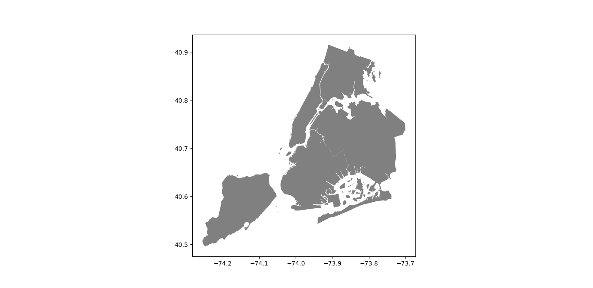
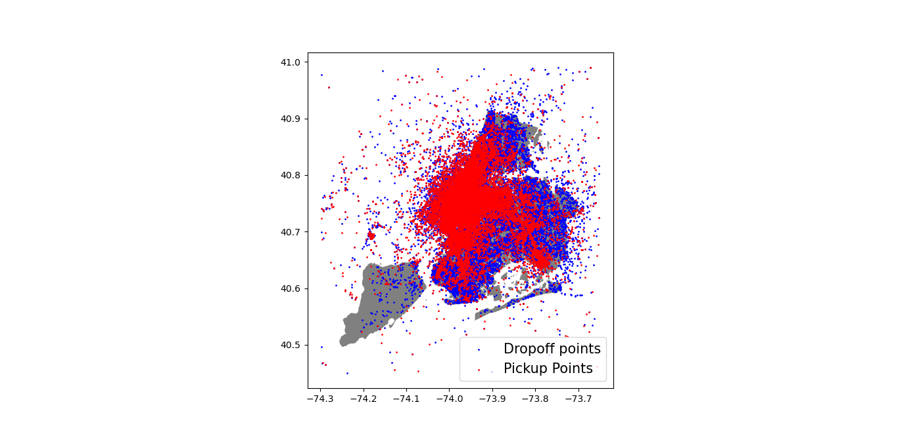

Quesitos mínimos
Após consulta ao Banco de dados sabemos que a distância total percorrida nos 4 anos, para viagens com até dois passageiros foi:
8838663.16 Milhas !
Essa distância foi Percorrida em um total de:
3319652 viagens !
Deste modo com aproximação de três casas decimais a distância média para viagens com até dois passageiros foi:
2.663 Milhas !!
Após somar os valores das vendas de cada empresa e montar uma lista com os montantes
Selecionamos o maior valor dessa lista e concluímos que:
Creative Mobile Technologies foi o vendor que mais arrecadou com arrecadação de 19549084.28 Dólares
Consultamos o banco de dados e somamos para cada mês o valor das corridas pagas em dinheiro
Com ajuda da biblioteca matplotlib do python mapeamos as frequências e intervalos e plotamos o seguinte histograma:

Após consultar a soma das gorgetas agrupadas por dia no banco de dados montamos uma lista com os valores:
Esta lista nos permite plotar o seguinte gráfico de série temporal:

Quesitos bônus
Após consultar o banco de dados, filtrando apenas corridas que aconteceram em 2010.
Encontramos a soma, em segundos, dos tempos das corridas em sábados e domingos.
Também encontramos o número total de corridas no ano.
Dividimos o tempo pelo número de corridas e encontramos o tempo médio.
Após fazer as conversões chegamos a conclusão que o tempo médio é : 8 minutos e 44.79 segundos
Utilizando a biblioteca geoPandas e tomando o seguinte mapa de Nova York como base :

Consultamos as longitudes e latitudes,de pickup e dropoff, no banco de dados filtrando pelos valores esperados e montamos duas listas
Com essas listas de longitudes e latitudes conseguimos fazer 2 listas de pontos
Com auxílio da biblioteca geoPandas plotamos esses pontos no mapa, formando o seguinte resultado:
